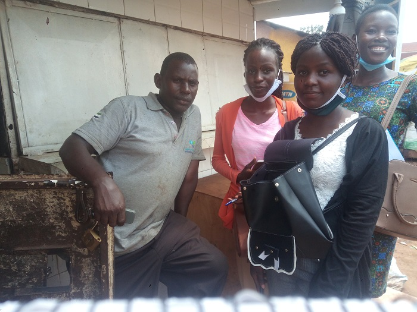
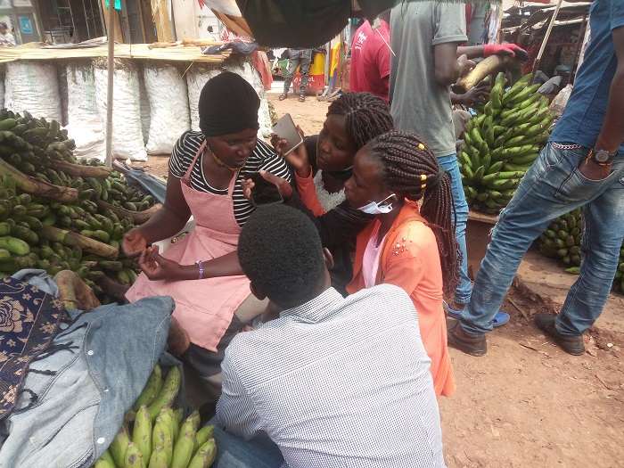
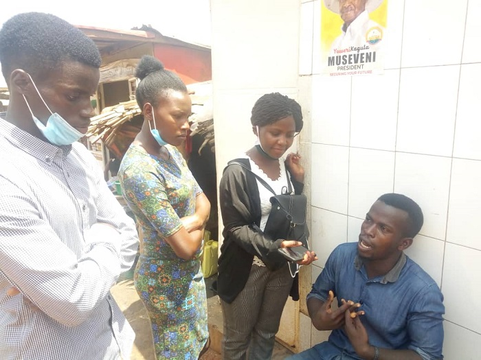
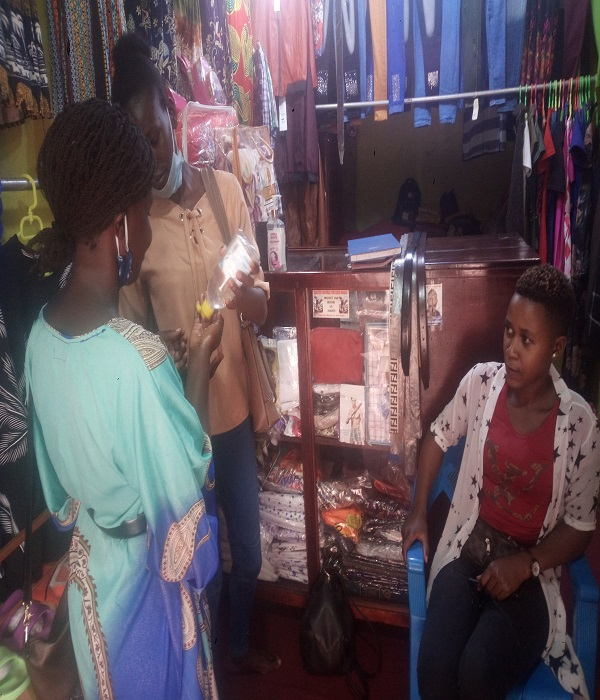

EXPERIENCES OF SOME OF THE KASUBI MARKET VENDORS REGARDING THE PANDEMIC
MAYANJA BUTCHER
Mayanja said that the pandemic has affected them as meat sellers negatively.
This is because of increase in transport costs especially in transporting cattle
from Mbarara to Kampala, reduction in the number of customers and amount of
commodity purchased as a result of arise in prices for example meat increased
price from shs.10,000 to shs.13,000 a kg.
Mayanja also asserts that observing Standard Operating Procedures (SOPs) set by
ministry of health has became hard due to limited space in the market.
We asked Mayanja as to why he thinks the prices of meat rose and he said
"I used to sell about 150kgs of meat per day but now I sell about 20 kgs
per day, the districts where we used to get meat from that is, Ggomba and
Masaka, their cows got "kalussu" a cattle disease, so we only get cows from
Mbarara which is a distant district. And because of the COVID 19, there was
restricted movements of vehicles that used to bring in Cows.
Mayanja also said that the Curfew has injured them because they used to work
from 4am to 11pm in the night but because of the morning curfew, they wake up
and 5:30am and the market closes at 7pm.

MULONGO BANANA SELLER
Mulongo alleged that ever since the pandemic, the conditions have turned
worse where by customers cannot even afford to buy banana at shs.15,000/-
and to make it worse, students have returned back to school where by parents
have no money for school fees. Mulongo said, i used to sell about 30 bunches
per day to different people including those from hotels and restaurants, but time
reached when all those places were locked, my daily sales reduced to about 7-10
bunches per day".
A bunch of matooke used to be at shs.20,000/- and now it is at shs.15,000/-,
but still the customers are unable to purchase matooke at shs.15000/- , so
she ends up selling them at cheaper prices before they ripe so as not to make
a total loss. She also added the banks are going to arrest them because of the
pending bank loans and the government failed to help them on reducing the bank
interests on loans.

KAYIZZI CHICKEN SELLER
Kayizzi the chicken vendor acknowledged that the pandemic was a benefit
to them since most people had to invest all the money in feeding well
since other ventures such as bars, restaurants and hotels where closed.
He also said that originally the prices of hens were shs.30,000/per cock
and 25,000/- per hen, but they changed because of the pandemic . Kayizzi
also added that the prices of the local chicken increased slight by shs.2000/
due to the increase in transport costs . He also continued to say that before
the hens used to be transported for free but now they have to pay for their transportation.
Kayizzi owns a small room for hens in Kasubi market that houses about 20-25 hens.
Before the COVID 19 pandemic, he used to sell about 8-10 hens per day, and his customers
reduced slightly, so he sells around 7-9 per day.

MARY CLOTHES SELLER
Mary says the pandemic affected them greatly where by they had to close the
shops which meant that they where not earning any income and could not afford
to purchase nice dishes like chicken and meat and could only afford meals like
beans to earn a living.She also said that the prices of clothes did not change due to the pandemic but
the number of customers reduced in the pandemic because most of the priority
was put on food by customers than clothes.
Mary says that before the pandemic they used to import in 2 dozen set of
clothes for sale per month but during the pandemic the amount reduced to a
dozen because of limited customers. However because of the coming festival
season they have to continue to stock in a lot to prepared for the future
before the prices increase.
She says curfew also affected them greatly because by 7-8pm they have to be
closing so as to reach at their residential places early and not be beaten by
security officers when caught moving beyond 9pm
